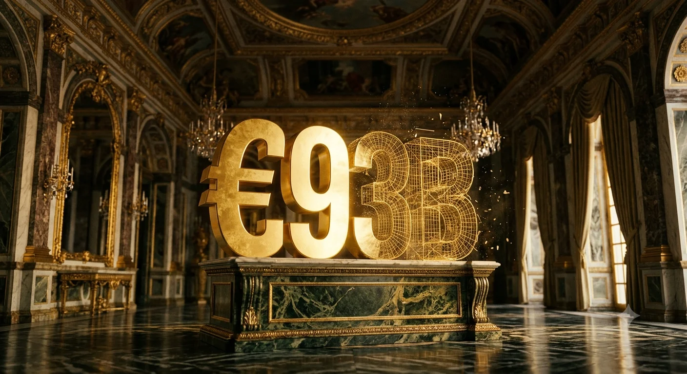
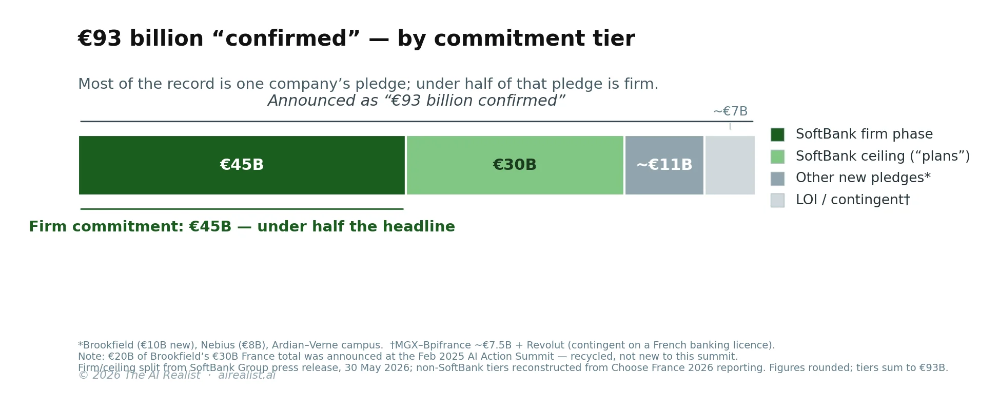

On the morning of June 1, 2026, in the gilded halls of Versailles, Emmanuel Macron told the assembled chief executives that this year’s Choose France summit would “crystallize a record amount of 93 billion euros of confirmed investments.”[1] The word that mattered wasconfirmed—confirmés. It is the word that turns a press release into a balance sheet, an intention into a number a finance minister can book.
Strip the SoftBank pledge out of the total, and the record disappears. The Japanese conglomerate’s commitment — up to €75 billion to build five gigawatts of AI data-center capacity across France — would be four-fifths of the headline on its own; even the firm tranche France’s own press counted into the total, €45 billion, is roughly half of it.[2] It is also the reason the number is a record at all: this single edition of Choose France exceeded theannouncedinvestment promises of the eight previous summits combined, which together totaled around €87 billion.[3] One pledge, from one company, made one summit larger than eight.
And that pledge is not €75 billion of confirmed money. By SoftBank’s own announcement, issued the day before the summit, only the first phase — €45 billion to deliver 3.1 gigawatts — is a commitment. The remaining €30 billion describes “additional sites” the company plans to develop.[4] The language shift inside a single press release, from “commitment” and “investment” to “plans,” is the whole story compressed into one document.
The last time Masayoshi Son stood beside a head of state and named a number this large, it was $500 billion. Sixteen months later, a fraction of one of its seven sites was running.
The anatomy of a record
A Choose France headline is not a measurement. It is a sum of commitment tiers, each with a different probability of becoming a building, presented to the cameras as a single figure. Disaggregate the €93 billion and five tiers separate cleanly: one firm, one a ceiling, one smaller but real, one barely more than a letter of intent, and one recycled from a previous summit.
At the firm end sits SoftBank’s €45 billion first phase — named sites, a named industrial partner in Schneider Electric, a developer in SB Energy, and a 2031 horizon.[5] This is the most concrete pledge at the summit, and it deserves to be treated as a real intent. Below it sits the €30 billion remainder of the SoftBank ceiling, which exists only as “plans for additional sites.” Below that sits a layer of genuine but smaller data-center commitments: Brookfield’s pledge, Nebius’s €8 billion site on a former Bridgestone plant at Béthune, an Ardian-Verne campus in the Paris region.[6] And belowthatsits the softest tier — capacity that is announced but not yet sited or committed: the MGX–Bpifrance “imminent selection of a second site,” worth around €7.5 billion, and a Revolut commitment contingent on the fintech obtaining a French banking license.[7][8]

The recycling is not a footnote to this structure; it is part of how the record was assembled. Brookfield’s France AI total is now quoted at €30 billion — but €20 billion of that was announced at the February 2025 AI Action Summit, the same event that produced the €109 billion headline; only €10 billion is new to this summit.[6] The MGX–Bpifrance money is the expansion of Campus AI, the Bpifrance–Mistral–MGX–Nvidia joint venture first unveiled at Choose France 2025, whose flagship campus at Fouju is still in early construction.[7] The €7.5 billion “doubles” a commitment that was itself last year’s announcement. Macron’s own framing conceded the pattern: the summit, he said, represented “20 billion invested, and 20 billion of AI investments as a follow-up to the summit in February.”[9] That February summit — the €109 billion AI Action Summit whose figure France never reconciled to disbursement — is being folded back into June’s total as “follow-up.”[10] A material share of this year’s record is last year’s record, counted again.
This is the Commitment-versus-Spend Gap, the analytical move that separates an announced figure from the capital that actually moves. Summit pledges do convert — France has led European foreign direct investment for years running, and Choose France is not a fiction. But they convert at a rate and with a lag that the headline never discloses, and the disaggregation above is why the headline and the eventual deployment are different numbers. At hyperscaler and sovereign-summit scale, the gap is not an anomaly to be explained away; it is the default structure of the announcement. The headline is the ceiling of what could happen. The filing, eventually, shows the floor of what did. The distance between them is where the analysis lives — and at Versailles, the distance is most of the number.
This raises the real question. Why would the most active investor in artificial intelligence structure its largest-ever European commitment as an option it might never fully exercise? The answer is on its balance sheet.
What the same pledge looks like sixteen months later
To price a SoftBank infrastructure pledge at the moment of announcement, you do not need a forecast. You need the last one.
On January 21, 2025, Son stood in the White House alongside Donald Trump, Sam Altman, and Larry Ellison to announce Stargate: $500 billion over four years to build AI data centers across the United States, with $100 billion to be deployed “immediately.”[11] SoftBank took financial responsibility, and Son took the chairmanship. The structure was familiar to anyone who had watched Son work: of the $500 billion, only around $52 billion was committed equity — roughly $19 billion each from SoftBank and OpenAI, around $7 billion each from Oracle and MGX. The other ninety percent was to come from debt and vendor financing, not yet arranged.[12] A mega-pledge, in the Son method, does not deploy existing capital. It opens a financing campaign.
Sixteen months on, the campaign’s results are measurable. Independent satellite analysis put the flagship Abilene, Texas campus at roughly 0.3 to 0.6 gigawatts operational by April 2026 — four of its eight buildings live — against a site target of 1.2 gigawatts and an announced program of ten.[13] The other six US sites were foundations and steel on 2028 timelines. One site of seven was partially energized; the rest were under construction.
Some of that gap is just physics: gigawatt data centers take three to five years to build, and measuring a ten-year program at month sixteen will always show a low number. Abilene, taken alone, is arguably ahead of a normal curve. So the conversion rate, in itself, is not the indictment. The indictment is what happened around it.
The vehicle itself barely functioned. By early 2026, Stargate LLC — the entity unveiled with such ceremony — had reportedly hired no staff and was developing no data centers; OpenAI had bypassed it for bilateral deals with Oracle, Amazon, and Google, and had come to treat the word “Stargate” as, in one executive’s framing, an umbrella term for its compute strategy rather than a company.[14] The Abilene flagship’s planned expansion was canceled in March 2026; the UK Stargate site was paused in April due to energy costs.[15]
None of this means that nothing was built. This is the point at which the skeptical version of the story has to be disciplined, because the booster version is partly true. Abilene is a genuine, operational AI campus running Nvidia hardware; thousands of tradespeople built it; major lenders — JPMorgan, a Newmark-led syndicate — genuinely closed billions in project finance against it.[16] The accurate claim is not that the money was fake. It is that conversion was slow, partial, debt-heavy, and routed around the very vehicle that gave the announcement its name.
The $500 billion functioned as a frame. The deployed reality was a fraction of it, arriving years behind the rhetoric. That is the precedent now anchoring a French summit’s record.
The balance sheet behind the pledge
The deeper reason to discount the €75 billion is not SoftBank’s track record. It is SoftBank’s balance sheet, and specifically the distinction between the money SoftBank actually moves and the money it lends its name to.
SoftBank’s funded AI capital has gone almost entirely into one place: its equity position in OpenAI. It completed a $41 billion round in December 2025 for roughly an 11 percent stake, then in February 2026 agreed a further $30 billion that would bring the cumulative total to $64.6 billion and the stake to about 13 percent — a figure that is reached only when the follow-on completes, in tranches running to October 2026.[17] To fund it, SoftBank sold its entire Nvidia stake, shed T-Mobile shares, and drew on a $40 billion bridge facility, the first $10 billion of it borrowed in April 2026, with the facility’s fee structure deliberately escalating to punish slow repayment.[18]
By early 2026, the position had consequences a rating agency could not ignore. S&P revised SoftBank’s outlook to negative in March, affirming a BB+ rating already below investment grade and describing OpenAI as one of the group’s investments “with the weakest credit quality” — even as Moody’s held a stable view a notch lower, the disagreement itself is a measure of how contested the bet is.[19] Reported leverage was still inside SoftBank’s own 25 percent loan-to-value ceiling at the end of 2025, but the chief financial officer had publicly opened the door to exceeding it “temporarily,” and S&P warned the OpenAI follow-on could push leverage toward the 35 percent line that would trigger a downgrade. The shares fell roughly 45 percent from their October 2025 high; one bank labeled the company a “valuation trap”; and SoftBank paused a separate $50 billion acquisition to preserve capacity.[20]
The bull would correctly object that this is only the liability side. SoftBank also holds one of the most valuable single assets in technology — roughly 90 percent of Arm, a stake worth more than $150 billion at mid-2026 prices — plus some $45 billion in unrealized gains on the OpenAI position itself, and it has shown it can monetize on demand, having sold Nvidia and T-Mobile to raise cash. That is real, and it is the strongest case for SoftBank’s resilience. But it cuts toward the concentration problem, not away from it: by mid-2026, the Arm and OpenAI stakes together made up nearly two-thirds of SoftBank’s assets, and the Arm holding is already pledged — an $8.5 billion margin loan drawn against it, with room for more. The crown jewel is collateral. And the credit market noticed: SoftBank’s five-year credit-default swaps widened to an eleven-month high after the S&P action, the widest among major Japanese corporates — the cost of insuring its debt rising in step with the bet.[20]
There is a circularity worth naming. SoftBank is OpenAI’s largest outside backer and, through SB Energy, a builder of the data centers OpenAI will rent. In France, it would play both roles again: financing the anchor tenant and constructing the capacity that the tenant is expected to fill.
This is the round-trip structure that has become the default at the top of the AI market — the same shape as Oracle and OpenAI, as Nvidia and CoreWeave — where the investor, the builder, and the customer are versions of the same few balance sheets passing capacity back and forth among themselves. It works while the music plays. It concentrates the risk when it stops.
Here is what that balance sheet didnotdo: fund Stargate LLC. The roughly $19 billion equity tranche SoftBank pledged to the vehicle has no confirmation of ever having been wired, because the vehicle was bypassed.[21] The chief financial officer’s own description of the model is the tell: SoftBank makes an equity investment, but the project itself is “financed as project finance,” so its own commitment is “limited” and “should not be too huge.”[22] Stripped of the jargon: SoftBank lends its name and a sliver of equity, and someone else’s debt builds the thing. The capital that flowed to an actual Stargate site was a $500 million check into SB Energy for the Milam County build. The headline was $500 billion; SoftBank’s verified site-level equity was three orders of magnitude smaller.
This reframes what the French €45 billion actually is. It is not a promise that SoftBank will place €45 billion on its own books. It is a promise that SoftBank will supply catalytic equity and arrange project financing that does not yet exist — Son said as much at the podium, describing the venture as one SoftBank is “aggregating project financing” to fund, against demand from an anchor tenant not yet named, on a balance sheet already carrying the most concentrated single-name bet in the AI buildout.[22] The pledge’s deliverability is downstream of a financing structure that has to be assembled and of an OpenAI liquidity event — an IPO — that has to occur before the bridge facility is repaid. France controls none of those variables.
And here, the two halves of the story close together. Staged commitments and project finance are, on their own, unremarkable — every large data-center developer rings capex into phases and funds it with non-recourse debt, because that is cheaper than equity and isolates the risk. The question is never whether a pledge is staged; it is what the staging rests on. SoftBank will not put €75 billion of its own balance sheet behind this — the balance sheet just described could not absorb it on top of the OpenAI commitment — so it writes a €75 billionoptioninstead: a headline ceiling, a smaller firm tranche, and project finance to be arranged later. What changes with leverage is not the structure but the margin for error within it. A cash-rich sponsor that stages a pledge can absorb a slipped tranche or a delayed financing; a sponsor whose crown jewel is already collateral, whose follow-on runs to October, and whose bridge presumes an IPO cannot.
The option produces the headline; the headline produces the political record; the record is what the summit needed.
The more strained the balance sheet, the larger and softer the number it can afford to announce, because softness is free and the announcement is the deliverable. To be precise about where the softness enters: not, mostly, with SoftBank. Its press release was scrupulous — “up to” €75 billion, a firm “€45 billion,” the rest explicitly “plans.” The recharacterization happened at the podium, when a phased pledge with one firm tranche became, in Macron’s telling, €93 billion “confirmed.” SoftBank disclosed an option. The summit booked it as cash.
What France actually brings, and what it doesn’t
The honest counterargument is that France is not Texas, and the difference favors the pledge. This deserves a fair hearing, because it is the strongest case for taking the €45 billion at close to face value.
France’s advantages are real and, unlike capital, not exportable. The grid is roughly 70 percent nuclear, France is, in most years, the world’s largest net electricity exporter, and industrial power prices sit well below those in much of Europe, with EDF long-term pricing around €70 per megawatt-hour from 2026.[23] For a buildout whose binding constraint is increasingly power rather than capital, that is a genuine structural edge, and it is why the first-phase sites cluster in Hauts-de-France near existing grid and nuclear infrastructure, including a former coal site at Bouchain where EDF is the named development partner.[24] It also matters that the prior SoftBank pledges failed precisely on the variable that France has solved: the Saudi solar plan had no offtaker, and the UK Stargate site was paused due to energy costs. France removes the constraint that killed those. If any SoftBank data-center pledge converts close to schedule, the case for this one is better than most — and that concession should be granted in full.
But cheap power is necessary, not sufficient, and it is not the variable that has stalled the buildout this year. What stalled Stargate was not the price of electricity; it was demand discipline and financing — a canceled expansion, a paused site, a vehicle that never funded. France solves the kilowatt-hour. It does not supply the anchor tenant, the assembled debt, or the balance-sheet capacity, and those are the three things the precedent says actually bind. Power is the one layer of the stack that France owns, and it is the bottom layer. Above the kilowatt-hour, the French buildout is foreign at every tier. The capital is Japanese. The chips are American — Nvidia silicon, subject to American export jurisdiction. The most likely offtaker of five gigawatts of French inference and training capacity is American, because the anchor tenant SoftBank builds for is OpenAI, and no European anchor of remotely comparable demand has been named.[25]
France is not building sovereign AI capacity. It is providing the land and the electricity for someone else’s intelligence layer, and calling the result French because the substations are.
Macron said the summit would make France “the leading country hosting data centers and computing capacity in Europe,” and that the country was “closing the gap we had in computing capacity.”[26] Both claims may even come true. But hosting capacity and owning intelligence are different sovereignties, and the gap that closes is the one measured in megawatts, not models. This is the substrate-state position, normally diagnosed in Southeast Asian economies that host hyperscaler data centers without owning any layer of the intelligence that runs on them. It is striking to find a G7 economy with a world-class research base occupying the same structural slot — providing the physical inputs and importing everything above it. The fair counter is that substrate can be a first rung rather than a ceiling: Taiwan and South Korea became chip powers partly by first hosting foreign firms’ manufacturing, and a country cannot build the intelligence layer on capacity it never built. Hosting compute you don’t yet own can be a deliberate developmental bet. But the bet only pays off if value accrues locally over time — if the substrate becomes a ladder.
The SoftBank pledge is built the other way: a foreign sponsor, foreign chips, and a most-likely-foreign tenant, with no disclosed mechanism for the intelligence layer to be handed over to French hands. It is a substrate as a destination, not a substrate as a rung.
There are two genuine exceptions inside the broader French buildout, and honesty requires naming both — because they sharpen the point rather than soften it. The first is Campus AI, the joint venture whose expansion supplied the €7.5 billion tier; its French AI champion, Mistral, secured up to 200 megawatts of capacity there, announced the same day as the summit.[7] But Mistral’s role in Campus AI is principally that of shareholder and board member; the project’s own coordinator described the startup as a “preferred” future client while conceding that, for now, “nothing has yet been done” on a binding tenancy.[7] Campus AI’s own president framed the stakes in terms that could serve as this article’s thesis: the test, he said, is that “every gigawatt must grow value in France, and not simply pass through it.”[7] The second exception, and the more real one, is Mistral’s own data center at Bruyères-le-Châtel — its first debt-financed build, totaling $830 million for roughly 13,800 Nvidia chips and about 44 megawatts of capacity.[27] That is the genuine article: a French company owning its own compute.
And its scale is the whole argument in one number. Forty-four megawatts of sovereign French compute, against SoftBank’s 3,100-megawatt first phase. The champion’s owned infrastructure is roughly 1% of the substrate that the country provides for someone else’s use. For the marquee number — five gigawatts — there is no French anchor. The grid is the moat, and nearly everything it powers belongs to someone else. And even the grid advantage is contingent on RTE, the French grid operator, actually delivering 3.1 gigawatts of new connection capacity to three specific sites by 2031 — an unprecedented load addition on a timeline that grid-connection history does not obviously support, and that no signed connection agreement has yet confirmed.[28]
What would have to be true
The thesis is falsifiable, and it is worth stating the conditions plainly, because they are also the things a serious investor should watch. And there is someone who should watch. An option-shaped pledge harms no one if everyone prices it as an option — but it is not being priced that way. It is being booked as a record by a government building industrial-policy narrative on it, cited by analysts pricing “France is Europe’s AI hub” into datacenter REITs and French-exposure allocations, and folded into the case for a SoftBank credit that already trades below investment grade. The reader who needs the disaggregation is the one about to treat €93 billion of intention as €93 billion of capital.
The skeptical reading is wrong if, within roughly twelve months, SoftBank secures binding project financing — not a memorandum — for at least the Dunkirk site; if a named anchor tenant or binding offtake agreement appears; if an executed lease replaces “preferred bidder” status at Bouchain; and if the OpenAI IPO closes cleanly enough to let SoftBank refinance the March 2027 bridge without forced asset sales. If those happen, the €45 billion converts, and the substrate-state critique becomes a quibble about who owns the value rather than whether the buildings exist.
The thesis is confirmed if the tells repeat: financing perpetually “being assembled,” capacity that “can scale to” rather than “will reach,” a first-operations date that slips past 2028, no anchor tenant disclosed by 2027, a further S&P action, or the same “pause” language that appeared over the UK site in April.
On sixteen years of SoftBank precedent — from the 2016 Trump Tower pledge that resolved substantially into the WeWork loss, to the 2018 Saudi solar plan shelved within six months of its announcement, to Stargate at one energized site of seven — the base case is not fabrication. It is conversion that runs well below the headline and well behind the clock.[29]
Which is the precise thing the wordconfirméswas chosen to obscure. Macron did not announce €93 billion of investment. He announced €93 billion of intention, of which the largest single component is a ceiling, two-fifths of that ceiling is merely a plan, and the firm remainder rests on a balance sheet betting its credit rating on a single American startup’s path to an IPO. The number is not false. It is an option — priced, and presented, as a certainty.
Notes
[1]: Emmanuel Macron, remarks at the Choose France summit, Versailles, June 1, 2026: “Cette édition de Choose France à elle seule va permettre de cristalliser un montant record de 93 milliards d’euros d’investissements confirmés.” Reported byfranceinfo, June 1, 2026; quote also carried verbatim byEuronews FR. The €93 billion figure spans 71 projects and a French-government-stated ~15,600 jobs; it is an announcer-claimed forward figure, not an audited outcome.
[2]: SoftBank Group Corp.,“SoftBank Group to Build 5 GW of AI Data Center Capacity in France,” press release, May 30, 2026. The €75 billion figure is stated as “up to.”
[3]: franceinfo, June 1, 2026, reporting that the single 2026 edition exceeded the cumulative announced totals of the prior eight Choose France editions (~€87 billion combined). Prior editions per Élysée/Business France press dossiers (2023 dossier, diplomatie.gouv.fr): 2023 ~€13B; 2024 ~€15B; 2025 stated variously as ~€20B (Macron, 2026 framing) and €40.8B (2025 press dossier) — the moving baseline is noted as itself indicative of headline elasticity.
[4]:SoftBank press release, May 30, 2026: the first phase is described as “an initial €45 billion investment to deliver 3.1 GW”; subsequent capacity is described as the company “also plans to develop additional sites across France.” The shift in verb from “investment/commitment” to “plans” is within the same document.
[5]:SoftBank press release, May 30, 2026. Named first-phase sites: Dunkirk (Loon-Plage), Bosquel, and Bouchain, all in Hauts-de-France; Schneider Electric named as strategic partner (robotized manufacturing at Dunkirk); SB Energy as developer; first operations targeted 2028, full phase by 2031. Per a separate SoftBank announcement (reported by TechRepublic, June 2026), the Bosquel ~1 GW site is structured as a majority-SoftBank joint venture with Sesterce — i.e. even within the “firm” first phase, the capital structure is partly third-party, not pure SoftBank balance sheet.
[6]: Smaller data-center tier, per Choose France 2026 reporting (Le Monde Informatique, Le Journal des Entreprises, Silicon.fr, June 1, 2026): Brookfield €10B at Escaudain (Nord), with Data4, for a ~1 GW datacenter, bringing its stated France AI total to €30B — of which €20B was announced at the February 2025 AI Action Summit (Brookfield press release, Feb 10, 2025: €15B via Data4 + €5B associated infrastructure, delivery by 2030), so only €10B is new to the 2026 summit. Nebius ~€8B / 240 MW on the former Bridgestone site at Béthune. Ardian/Verne ~€5B for a 500 MW Île-de-France campus, full 500 MW capacity targeted only 2035–2037, itself the first tranche of a broader ~€10B / 1 GW French consortium (Ardian, Iliad, EDF, Orange, Scaleway). Figures are announcer-claimed; several were pre-trailed by Les Echos and final terms may differ.
[7]: MGX–Bpifrance ~€7.5B is the national expansion of Campus AI, the joint venture of Bpifrance, Mistral AI, MGX (UAE), and Nvidia, first announced at Choose France 2025 (May 19, 2025) to build “Europe’s largest AI Campus” (flagship ~1.4 GW, Paris region). Per theBpifrance press release (June 1, 2026), the expansion targets up to 3 GW nationally and the ~€7.5B second-site selection “doubles the consortium’s initial investment”; the second site selection is described as “imminent,” not yet committed. The flagship campus at Fouju (Seine-et-Marne) was reported still in early construction (”foundations laid, main site not yet begun”) as of April 2026; the flagship’s secured first tranche is reported at ~€8.5B (Le Figaro), a separate figure from the €7.5B second-site expansion. Campus AI is the one summit pledge with a French intelligence-layer anchor (Mistral); the substrate-state exception is noted in the body. The Campus AI president quoted in the body is Thibaud Desfossés (”chaque gigawatt doit faire fructifier la valeur en France, et non simplement la traverser”), per the Bpifrance press release.
[8]: Revolut’s ~€1B France commitment was reported as contingent on the firm obtaining a French/EU banking licence.
[9]: Emmanuel Macron, remarks reported by Reuters, June 1, 2026: characterizing the AI-related portion as “20 billion invested, and 20 billion of AI investments as a follow-up to the summit in February.” Verify verbatim French against the Élysée transcript before publication.
[10]: The February 2025 AI Action Summit in Paris produced a ~€109 billion headline; France published no public reconciliation of that figure to authorized, appropriated, or disbursed capital. See“The King’s New Datacenters”(The AI Realist, March 25, 2026), which audited the €109B pledge to an honest near-term figure of roughly €25B.
[11]: OpenAI,“Announcing The Stargate Project,” January 21, 2025; announced at the White House with President Trump, Sam Altman, Larry Ellison, and Masayoshi Son. Headline: “$500 billion over the next four years … We will begin deploying $100 billion immediately.” Son named chairman.
[12]: Reported equity structure (The Information; corroborated by Bloomberg, WSJ): ~$52B committed equity against the $500B headline — roughly $19B each SoftBank and OpenAI, ~$7B each Oracle and MGX — implying ~90% of the program was to be debt- and vendor-financed and not yet arranged at announcement. WSJ reported SoftBank’s equity share could be as low as ~10%.
[13]: Epoch AI,“OpenAI Stargate: where the US sites stand”, satellite-imagery analysis, April 17, 2026: Abilene operational at ~0.3 GW (April 17 reading; a later cached version of the same page shows ~0.6 GW), ~4 of 8 buildings live, against a 1.2 GW site target; Epoch projects the program to “exceed 9 gigawatts by 2029” versus the $500B/10 GW headline announced January 2025; six other US sites in early construction on ~Q4 2028 timelines. “Operational” capacity is satellite-verified (Airbus DS imagery); OpenAI’s “nearly 7 GW planned / $400B+ over three years” figures (five-new-sites announcement, Sept/Oct 2025: https://openai.com/index/five-new-stargate-sites/) are announcer-claimed. The Abilene ~600 MW expansion was redirected, with Microsoft taking the adjacent 900 MW Crusoe site.
[14]: Reporting by The Information, corroborated by Bloomberg and the Financial Times (early–April 2026): Stargate LLC had hired no staff and was developing no data centers; OpenAI pursued bilateral capacity deals (Oracle ~$300B/4.5 GW, plus AWS, Google Cloud) and treated “Stargate” as an umbrella term for its compute strategy. Bloomberg (Aug 7, 2025) earlier reported CFO Yoshimitsu Goto conceding the effort was “taking longer than anticipated.”
[15]: Abilene expansion (~600 MW) cancelled: Bloomberg, March 6, 2026 (Microsoft took the adjacent Crusoe capacity). Stargate UK paused: Bloomberg, April 9, 2026, citing energy costs.
[16]: Abilene construction: Crusoe/Oracle; JPMorgan project-finance facility (~$2.3B, May 2025) and a Newmark-led syndicate (~$7.1B); Nvidia GB200 racks installed from mid-2025; Ellison stated an ultimate target above 450,000 GB200 GPUs under a 15-year Oracle lease. These are real, closed commitments and are cited to discipline the “headline is empty” overclaim.
[17]: SoftBankcompleted a $41B OpenAI round in December 2025for ~11% (comprising ~$30B from SoftBank Vision Fund 2 plus ~$11B syndicated co-investment); on February 27, 2026 it agreed a further $30B follow-on (SoftBank Group Corp. press release), funded through Vision Fund 2 as part of OpenAI’s ~$110B round (the largest private funding round on record, valuing OpenAI at ~$852B), bringing cumulative investment to an expected $64.6B and ~13% stake “upon completion,” subject to closing conditions. The follow-on is staged: first $10B tranche executed April 1, 2026; further $10B tranches scheduled July 1 and October 1, 2026 (SoftBank Group Corp. press release, April 1, 2026). As of the June 1 summit, the $64.6B figure is therefore expected-on-completion, not a settled position.
[18]: Funding via disposal of SoftBank’s entire Nvidia stake (~$5.83B, October 2025) and T-Mobile shares; $40B bridge facility signed March 27, 2026, with the first $10B drawn April 1, 2026 (SoftBank Group Corp. press release). The facility is unsecured and full recourse to SoftBank, with no OpenAI shares or Arm stake pledged as collateral; perIFR / loan syndication reporting, the margin starts at 250bp over SOFR and steps up by 17.5bp from July through end-September 2026, a structure designed to incentivise an early takeout via bonds or term loans ahead of an expected OpenAI IPO (widely reported as targeted for late 2026 / as early as Q4 2026; the 12-month tenor, maturing ~March 25–26, 2027, is read by lenders as a bet on that listing). A separate ~$10B margin loan (arranged by Goldman Sachs, JP Morgan, Mizuho; two-year facility with one-year extension, limited recourse) is distinct from the bridge; SoftBank subsequently scaled this facility back toward as little as ~$6B after creditor hesitation (Bloomberg, via Fortune) — a direct signal of the financing strain the body describes. MST Financial’s David Gibson, via the Financial Times, estimated SoftBank faces “[an estimated] $50bn ... of funding, between OpenAI, investments and refinancing” to arrange over the course of 2026; OpenAI is not expected to reach profitability until 2030.
[19]: S&P Global Ratings, action reported March 2026 (S&P statement via Bloomberg; B-tier link to wire coverage of the agency statement): outlook revised to negative, BB+ affirmed (below investment grade), OpenAI described as “one of its investments with the weakest credit quality”; S&P also flagged the unlisted-asset proportion rising above 50% (from 42%) and warned the $30B follow-on could push leverage toward the 35% level that would trigger a downgrade. Moody’s held SoftBank at Ba2/stable (2025 upgrade). The agency divergence is presented to avoid cherry-picking the bearish view; both keep SoftBank below investment grade.
[20]: SoftBank’s reported loan-to-value ratio was 20.6% at end-December 2025, within its stated financial policy (LTV managed below 25% in normal conditions, 35% emergency ceiling; SoftBank Group Corp. disclosure). CFO Yoshimitsu Goto told the Financial Times (March 2026) the group “does not rule out” temporarily exceeding 25%. ADR down ~45% from its October 2025 high by late March 2026; Jefferies downgraded to “Underperform,” calling the company a “valuation trap”; SoftBank paused a separate ~$50B acquisition (Switch). The piece does not claim the 25% ceiling was breached as of publication — only that the CFO opened the door and S&P flagged the trajectory.
[21]: No A-tier source confirms SoftBank’s ~$19B Stargate LLC equity tranche was wired; reporting (The Information, Bloomberg, FT) indicates the JV was bypassed in favor of bilateral deals. Bloomberg Intelligence estimated SoftBank’s actual Stargate cash requirement nearer ~$40B “given its less-active-than-expected participation” — an estimate, not a disclosure.
[22]: Yoshimitsu Goto, SoftBank Q3 FY2025 earnings call, February 12, 2026 (translated remarks): SoftBank makes an equity investment while the project itself is financed as project finance, so SoftBank’s own size is “limited” and the amount “should not be too huge.” Verify exact translated wording against the SoftBank transcript before publication. Son corroborated the same structure at the Choose France podium, stating SoftBank is “aggregating project financing” for the French venture and that the figure “balloons to roughly $750 billion once the broader system is factored in” (CNBC, June 1, 2026) — the announcer himself confirming both that the financing is not yet assembled and that the headline expands on a “broader-system” basis.
[23]: French grid: ~70% nuclear share of generation; France the largest net electricity exporter in Europe/globally in most years (RTE/IEA data — cite data year at fact-check). Note the 2022 exception: amid widespread reactor-corrosion outages France was briefly a net importer, which is why the body says “in most years.” EDF long-term industrial pricing ~€70/MWh from 2026 per the post-ARENH framework. Replace paraphrase with primary RTE/CRE figures and the specific data year before publication.
[24]: SoftBank press release, May 30, 2026; Bouchain former coal-plant site with EDF as named development partner (described at “preferred bidder/due diligence” stage). Grid-proximity rationale for the Hauts-de-France cluster per company and regional (CC2SO/RTE) materials; Bosquel reported ramping 240 MW → ~1 GW → 1.4 GW per regional authority citing RTE.
[25]: No anchor tenant was named in the SoftBank announcement. The substrate-state characterization (Japanese capital, US chips, likely-US offtake) is an analytical inference from SoftBank’s OpenAI relationship, not a stated offtake agreement; flagged as inference.
[26]: Emmanuel Macron, remarks from the Élysée, June 1, 2026, reported by regional French press (mesinfos/La Semaine de l’Île-de-France): aim to make France “le premier pays accueillant des centres de données et des capacités de calcul en Europe” and “Nous sommes clairement en train de combler le retard que nous avions en matière de capacités de calcul en Europe.” Verify against the Élysée transcript before publication.
[27]: Mistral AI raised $830M in debt financing (its first debt raise since founding) from a seven-bank consortium (incl. BNP Paribas, Crédit Agricole CIB, HSBC, MUFG) to acquire ~13,800 Nvidia GB300 chips for a data center at Bruyères-le-Châtel (Essonne), ~44 MW, operational expected Q2 2026 (TechCrunch, March 30, 2026; also Reuters, CNBC). Separately, on June 1, 2026, Bpifrance announced Mistral secured up to 200 MW of capacity with Campus AI (Bpifrance press release); the Campus AI project coordinator (L’Usine Nouvelle) described Mistral as a “preferred” future client and board member/shareholder while stating no binding tenancy was yet concluded — the distinction between equity partner and committed offtaker is preserved in the body. Scale contrast: ~44 MW of Mistral-owned compute vs. SoftBank’s 3,100 MW first phase.
[28]: RTE 3.1 GW connection feasibility to Dunkirk/Bosquel/Bouchain by 2031: no published binding confirmation as of publication. CRE fast-track connection regime (deliberation 2025-120) implies multi-year (≈3–4 year) connection timelines even when expedited. Press-release language on “abundant, decarbonised electricity” is political framing, not a signed connection agreement.
[29]: SoftBank pledge precedents: (a) December 2016 Trump Tower “$50B / 50,000 jobs,” drawn from the forming Vision Fund, with ~half of deployed capital flowing into WeWork (peak ~$47B valuation; 2023 bankruptcy) —Axios retrospective; (b) March 2018 Saudi PIF “$200B / 200 GW” solar MOU, shelved by ~September 2018 (WSJ); (c) Vision Fund 2 ($108B target, ultimately run largely on ~$38B of SoftBank’s own capital). Each: a head-of-state-adjacent headline converting to a fraction of announced, slower, and structurally different capital. France-specific conversion claims are forecasts based on this precedent, not observed outcomes.